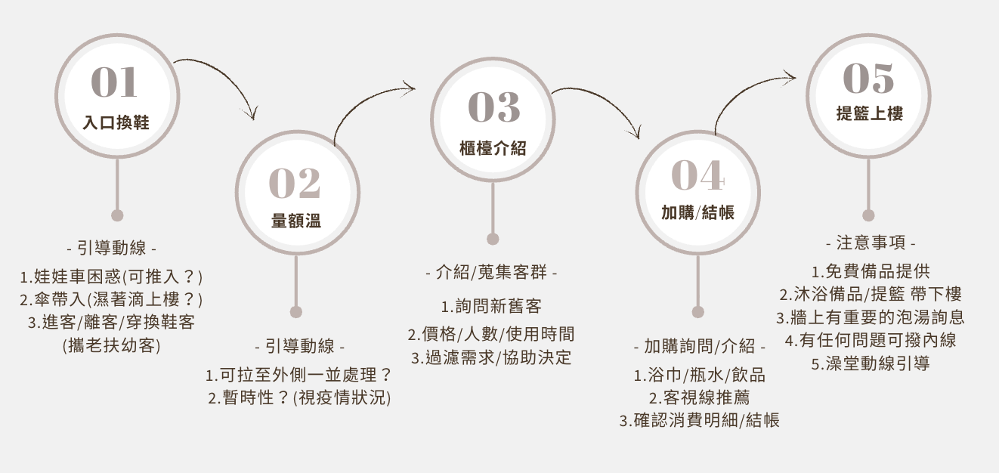
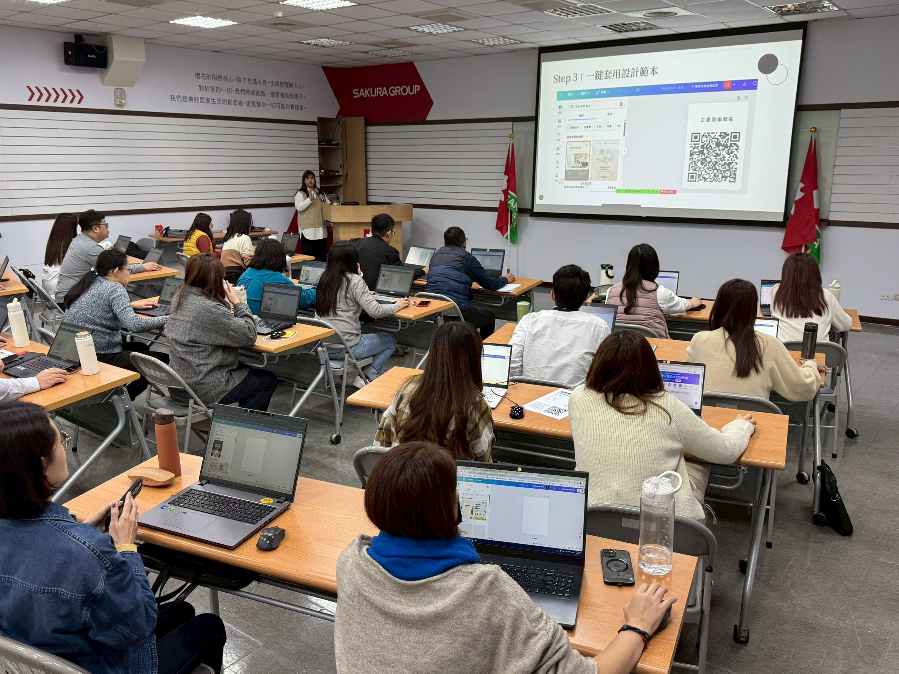
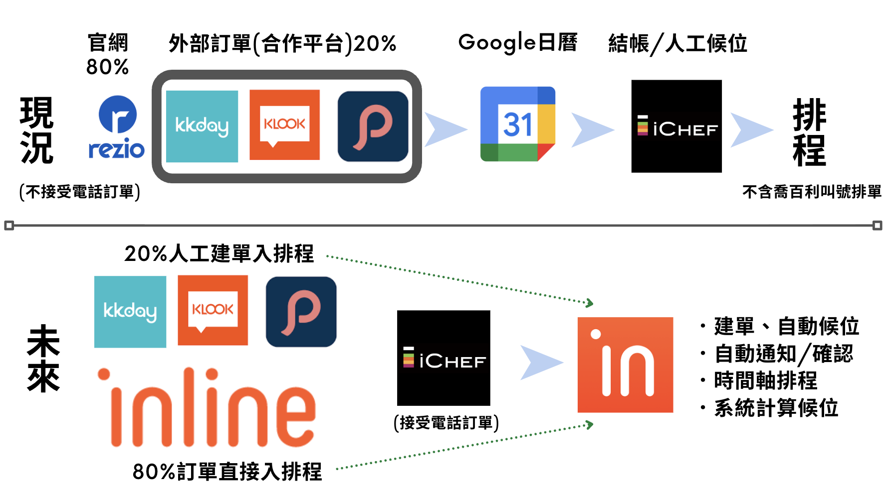
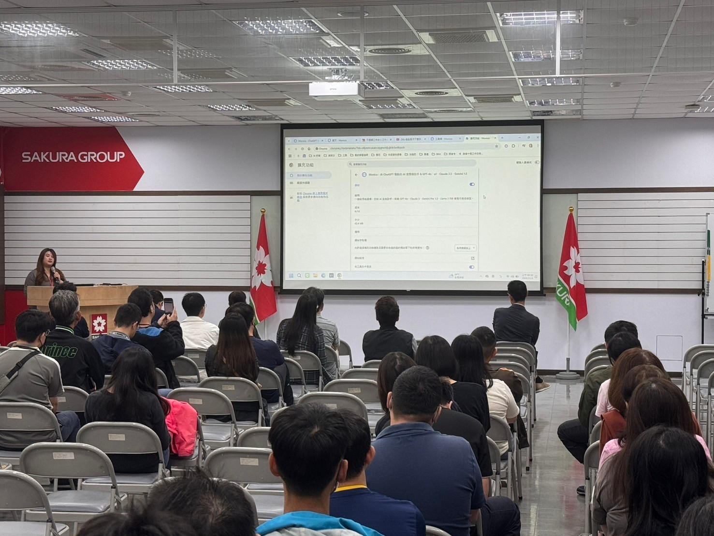
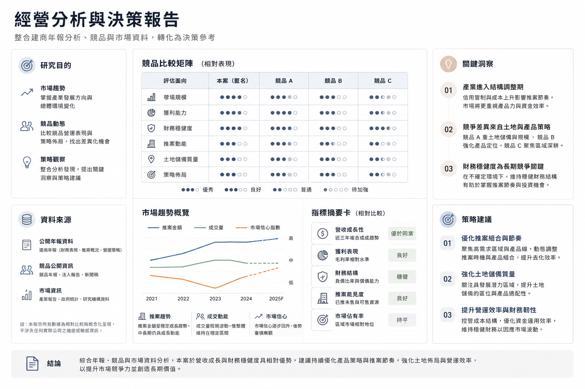
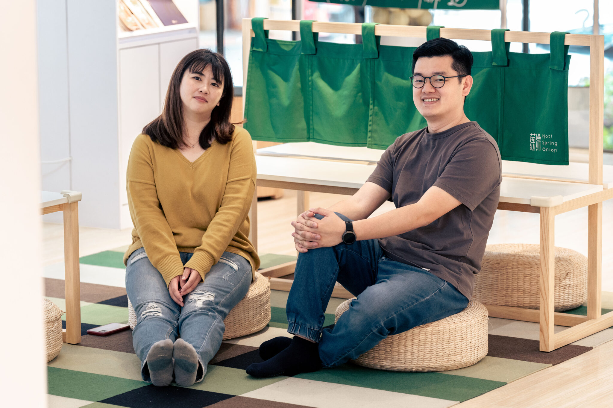
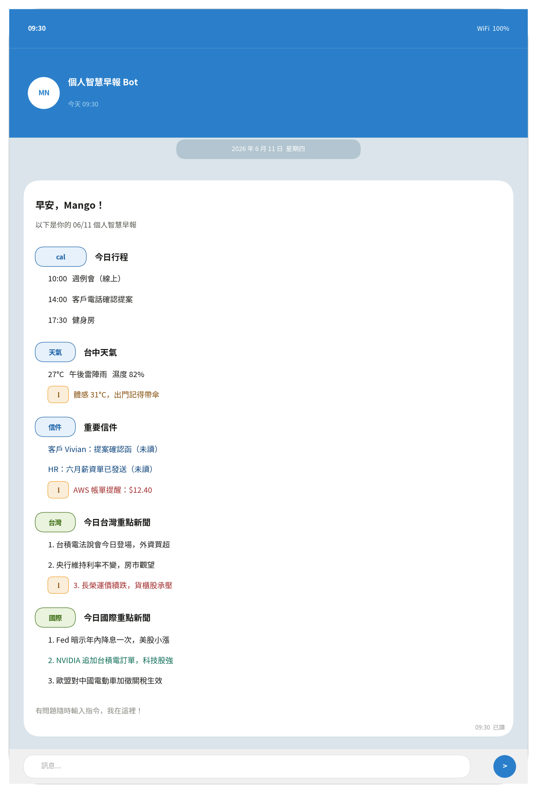
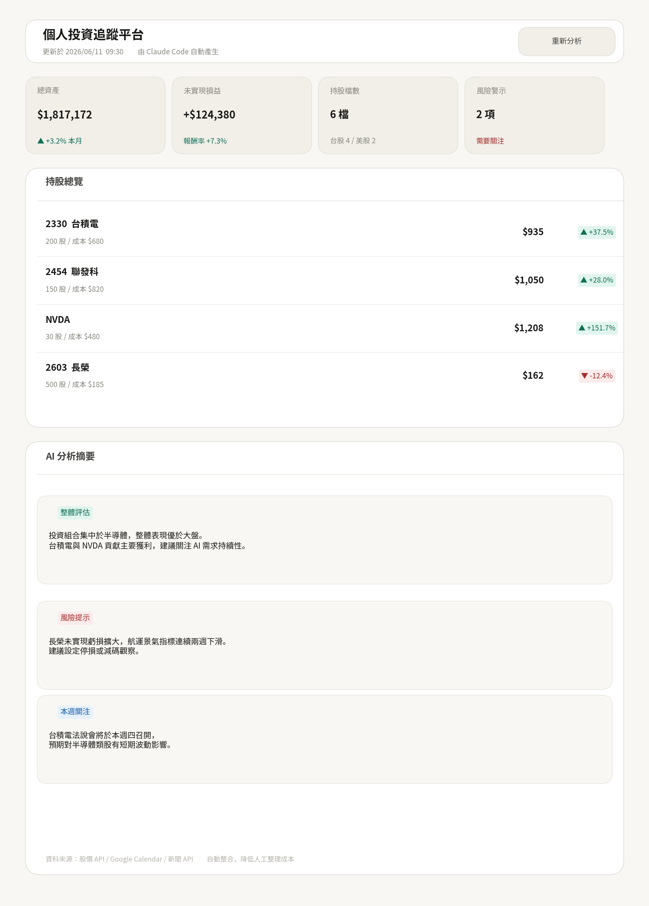
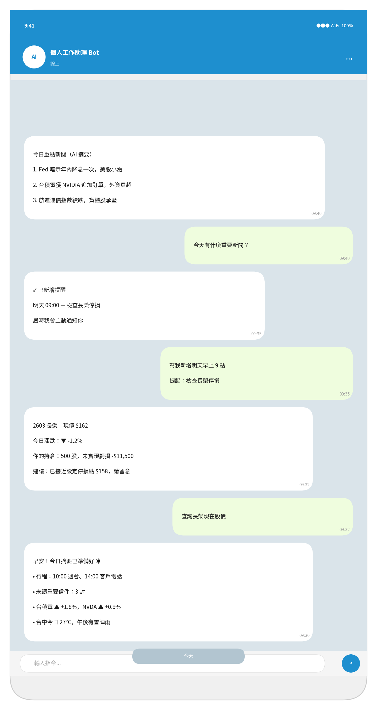

我是呂沛雯（Mango）。
過去 14 年橫跨旅遊、餐飲與製造業，看似不同的產業，其實都在做同一件事：
找出問題真正發生的位置，並建立能夠持續運作的方法。
從品牌籌備、跨館營運、系統導入到商業分析，我擅長在資訊分散、流程不清或需求模糊的情況下，快速釐清現況、整合資源，將想法轉化為可執行的方案。
近年則將這套方法延伸到 AI 與自動化領域，持續探索如何透過數位工具提升組織效率與決策品質。
優化成果
從問題診斷、流程設計到方案落地，這是我面對複雜問題時的工作方式。

透過使用者訪談、現況盤點與流程拆解，釐清需求、痛點與權責斷點，協助團隊找出真正需要改善的問題。

將需求轉化為流程文件、系統規劃與導入方案，協助使用者、廠商與內部團隊對齊工作方式。

從需求確認、方案規劃、教育訓練到上線後追蹤，協助改善方案真正落地，並建立可持續運作的流程與機制。
在不同產業與組織中，透過分析、規劃與執行推動改善成果。

以使用者訪談與架構驗證，重整 Sitemap 與網站導覽邏輯。

盤點作業流程並導入營運系統，提升資訊透明度與追蹤效率。

推動 AI 工具導入實際工作流程，協助團隊建立應用方法。

整理市場、競品與營運資料，轉化為管理層決策參考。

將模糊商業概念轉化為可執行的流程、制度與團隊分工。
從真實需求出發，透過 AI 與自動化工具探索更有效率的工作方式。

整合 Google Calendar、Gmail、新聞與天氣資訊，每日自動產生個人化早報，減少資訊蒐集與整理時間，讓重要事項集中呈現。

建立個人投資追蹤平台，自動整合股價、持股資訊與 AI 分析結果，集中管理投資決策所需資訊，降低人工整理成本。

透過 Telegram 作為操作介面，整合資訊查詢、資料更新與通知功能，打造可隨時互動的個人工作助理，提升日常資訊處理效率。
從品牌營運、流程優化到商業分析與 AI 應用，逐步建立分析問題、設計流程與推動落地的能力。
松語墅日租企業社｜旅宿展店人員
從第一線服務開始，參與品牌展店與營運建置，主導品牌籌備、制度建立、人才培訓與開業規劃。期間完成 3 家品牌門市籌備，並參與藝術溫泉品牌從規劃到開業的完整過程，累積從市場分析到現場營運的實務經驗。
名寓有限公司｜行銷企劃主管 → 營運執行
從品牌行銷逐步轉向營運管理與數位工具導入，負責訂位系統、旅遊平台與內部管理工具整合，建立 SOP、教育訓練與數據追蹤機制。透過流程改善與系統導入，提升團隊效率 36%，並協助組織在疫情期間維持成長。
台灣櫻花股份有限公司｜經營企劃管理師
透過市場研究、上市櫃年報分析與使用者需求訪談，協助事業處盤整市場資訊與營運需求，作為策略規劃與官網優化的重要依據。期間參與集團 AI 賦能計畫，從需求盤點、工具評估到教育推廣，一年內協助推動 11 項 AI 應用落地，並擔任內部授課講師。
正在尋找 Business Analyst、系統導入、數位轉型與流程改善相關機會。
如果你的團隊正在推動系統導入、AI 賦能或營運流程改善，我很樂意聊聊如何協助需求釐清、流程設計與工具落地。